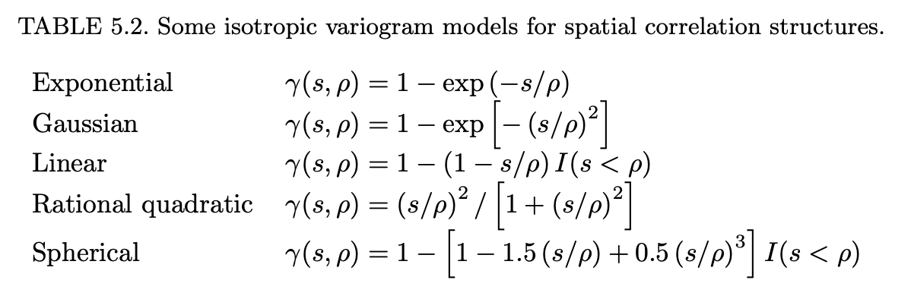

15 Modeling Heterogeneity: Fixed Effect models vs Random Coefficient Models
In continuation of looking at heterogenous variance modeling, random coefficient models are a specific type of mixed effect model that allow richness in modeling the variance through random effects. This is adding to the toolbox that we’ve built upon from last week in we looked at modeling the covariance matrix directly. Since we are introducing two “angles” of attack and giving structure to the variance Var(Y), SAS commonly refers to this method of covariance modeling through random effects as “G”-side. Modeling the covariance directly as we did last week is referred to as “R”-side for “residuals”. The terminology becomes more clear with the framework:
\begin{aligned}
Y = X\beta + Zu + e
\end{aligned}
where:
u\sim N(0,G)
\varepsilon \sim N(0, R)
\begin{aligned}
Var(Y) &= Z\underbrace{\operatorname{Var}(u)}_GZ' + \underbrace{\operatorname{Var}(e)}_{R} \\
&= \Sigma
\end{aligned}
Note we can also define the following variances when additional random effects are present, such that:
\operatorname{Var}(Y | u) = R “conditional variance”
\operatorname{Var}(Y) = ZGZ' + R “marginal (individual) variance”
\operatorname{Var}(u) = G “random effect variance”
These are directly extractable through lme with getVarCov(obj, type = c("random.effects", "conditional", "marginal")).
In the fixed effects models, we have
\begin{aligned}
Y = X\beta + \varepsilon
\end{aligned}
where:
\varepsilon \sim N(0,\Sigma)
Again, we have that \operatorname{Var}(Y) = \Sigma. This is exclusively “R”-side modeling when the ZGZ' matrix is 0, which is the case when we don’t have any random effects.
16 Introducing Autism Data (part b)
Code
autism <-read.csv("data/autism.csv") %>%mutate(sicdegp =factor(sicdegp),childid =factor(childid),agef =factor(age)) # if we choose to model age as a factor autism_complete <- autism[complete.cases(autism),]autism %>%ggplot(aes(age, vsae, group = childid, color = sicdegp)) +geom_line(alpha =as.numeric(autism$childid)^2/30000) +# hack to emphasize just a few response curvesfacet_wrap(~sicdegp)
In context of this dataset, we note some research questions in particular that we are interested in modeling:
The age trend seems different among sicdegp levels.
I’d like to quantify the differences in these trends, and pick models that make this comparison easier to interpret.
The age trend itself seems mostly increasing linear, but each child seems to have their own linear trajectory.
There is perhaps an sharper inflection upwards around age 9. It would be worthwhile testing models that inflect upward as age increases.
There seem to be a greater variability in the slope for sicdegp = 2,3 than in sicdegp = 1.
There is fanning present from variability in slopes for each child, but the diversity among those slopes seem to differ as well.
We should make another plot that more directly shows/quantifies the extent of this. This also helps inform whether or not trying heterogenous models would be empirically necessary.
There are a non-trivial number of individuals that show “drop out” before the end of the study.
since the data doesn’t show the incompleteness, we should make the missingness “explicit” and try to quantify the extent that this missingness may bias our results.
17 Fixed Effect Modeling (part c)
In this section, we try to “push” fixed effects as far as we can by modeling the mean and covariance (R-side) and see how good of a model we can get. We’ll first focus on modeling the mean.
17.1 Modeling the Mean
From the exploratory plots, we loosely fit linear/quadratic/stick models to the data.
Code
# without child idautism_lm <-lm(vsae ~ age*sicdegp, data = autism_complete) # with child id, varying interceptautism_lm_id <-lm(vsae ~ age*sicdegp + childid, data = autism_complete)# with child id varying slope and intercept# Note: these estimates are the same as if we subset dataset to just the single child and ran lm. # sum(coef(autism_lm_id_slope)[c("(Intercept)", "childid10")])# sum(coef(autism_lm_id_slope)[c("age", "age:childid10")])# coef(lm(vsae~age, data = subset(autism, childid == 10)))autism_lm_id_slope <-lm(vsae ~ age + childid + childid:age, data = autism_complete)# stick modelsautism_stick <- autism_complete %>%mutate(age_gt_9 =as.numeric(age >9), # create indicator for stick modelsage_relu_9 = age_gt_9 * (age -9)) # ReLu function for adding slope above 9autism_lm_stick <-lm(vsae ~ age*sicdegp + age_relu_9:sicdegp, data = autism_stick) # without child id, "pooled"autism_lm_stick_id <-lm(vsae ~ age*sicdegp + age_relu_9:sicdegp + childid, data = autism_stick) # without child id, "pooled"autism_lm_stick_id_slope <-lm(vsae ~ age + childid + age:childid + age_relu_9:childid, data = autism_stick) # individual stick model# quadratic trendautism_lm_quad <-lm(vsae ~ age*sicdegp +I(age^2):sicdegp, data = autism_complete)autism_lm_quad_id <-lm(vsae ~ age*sicdegp +I(age^2):sicdegp + childid, data = autism_complete) # id specific interceptautism_lm_quad_id_slope1 <-lm(vsae ~ age*childid +I(age^2):sicdegp, data = autism_complete) # id specific intercept and linear termsautism_lm_quad_id_slope2 <-lm(vsae ~ age*childid +I(age^2)*childid, data = autism_complete) # id specific intercept, linear and quadratic# using poly macro# autism_lm_poly2 <- lm(vsae ~ poly(age, degree = 2) * sicdegp, data = autism)# autism_lm_poly2 <- lm(vsae ~ poly(age, degree = 2) * child_id, data = autism)
The stick model estimates look a little funky because there are some individuals with only observations at age = 2, 13, thus a stick model would be degenerate in those individuals and the plotting is simply showing the direct line instead of the stick estimates. I think the same thing is happening in the id quad estimates.
Code
autism_fixed_ic <-AIC(autism_lm, autism_lm_id, autism_lm_id_slope, autism_lm_stick, autism_lm_stick_id_slope, autism_lm_quad, autism_lm_quad_id, autism_lm_quad_id_slope1, autism_lm_quad_id_slope2) %>%add_column(BIC =BIC(autism_lm, autism_lm_id, autism_lm_id_slope, autism_lm_stick, autism_lm_stick_id_slope, autism_lm_quad, autism_lm_quad_id, autism_lm_quad_id_slope1, autism_lm_quad_id_slope2)$BIC)autism_fixed_ic %>%kbl(format ="html",caption ="Fixed Model Mean Information Criteria",table.attr ="style='width:50%;'") %>%kable_classic(full_width =TRUE) %>%column_spec(3, color =c("black", "red")[as.numeric(autism_fixed_ic$AIC ==min(autism_fixed_ic$AIC)) +1]) %>%column_spec(4, color =c("black", "red")[as.numeric(autism_fixed_ic$BIC ==min(autism_fixed_ic$BIC)) +1])
Fixed Model Mean Information Criteria
df
AIC
BIC
autism_lm
7
5538.140
5569.035
autism_lm_id
162
5440.346
6155.327
autism_lm_id_slope
315
4553.386
5943.626
autism_lm_stick
10
5538.678
5582.813
autism_lm_stick_id_slope
408
4153.635
5954.326
autism_lm_quad
10
5539.403
5583.538
autism_lm_quad_id
165
5440.750
6168.970
autism_lm_quad_id_slope1
318
4542.668
5946.148
autism_lm_quad_id_slope2
457
4237.499
6254.450
The information criteria here show something very interesting! AIC chooses one of the most complex models, with 408 parameters, while BIC chooses the model with 7 parameters! How you go about model selection is very much a philosophical decision, and the information criteria tend to reflect those camps of thinking. I’ll be moving forward with autism_lm.
17.1.1 Diagnostics
We can use the diagnostic plots to examine missing trends and start to get a sense of the variance modeling we will need.
Simple Linear Model
Code
par(mfrow =c(2,2))plot(autism_lm)
Individual Stick Model
Code
par(mfrow =c(2,2))plot(autism_lm_stick_id_slope) # danger with this model is that there are a number of points with leverage one.
Based on these plots, we see that when we choose the super parameterized models, we are risking overfitting with a number of values with leverage 1.
I would ultimately base modeling decisions on specific research questions the scientist had. If there was greater interest in ages 10 - 13, I may be more hesitant to choose the stick model because it’s quite overfit in this domain. If they wanted to summarize “rules of thumb” for presentation or big picture of this trait, I’d likely choose the simple linear model. If they were hoping for prediction applications based on younger children and valued accuracy of predictions, I may opt for the over-parameterized models like quadratic or stick model.
17.2 Modeling the variance
For simplicity, we’ll chose the linear functional form, as it is quite simple, and performs reasonably well for the number of parameters that it uses. Note, obviously the variance modeling will depend on your chosen mean model.
Similar to how we modeled the mean, we start with trying to visualize the covariance matrix with as few restrictions as possible, so we fit an unstructured covariance matrix with gls.
Code
# start with unstructured covariance matrix, and let the optimizer tell us the best estimate with no restrictions.autism_gls_un <-gls(vsae~age*sicdegp,correlation =corSymm(form =~1| childid), # unstructured correlationweights =varIdent(form =~1| agef), # parameter for each entry along diagonaldata = autism_complete)getVarCov(autism_gls_un)
There are some visual guides that we can use to help us model the covariance:
line graph of matrix entries, grouped by row
Variogram
Autocorrelation Function
17.2.1 1. Line Graph of matrix entries, grouped by row
I picked up this visualization from Generalized Linear Mixed Models by Walter Stroup, one of the authors of the SAS for Mixed Models book. I like this visualization better than a heat map because instead of using a color channel for the variance, it uses y-position which is much more clear.
This graphic is confusing at first, but I think it’s one of the more intuitive visualizations once you’re used to it. each point in the graph is the estimated covariance/variance. The lines show the trend that is happening in each row, as you move away from the main diagonal. For example, the red line is the first row of \hat \Sigma. There are 5 dots because the first row starts in column 1. The main diagonal (all the variances) are the left most point in each of the trend lines.
We see a similar pattern of the estimated covariances increasing as the age increases. column 5 represents age 13, and we can see the estimated variance is ~2500.
Since age has a meaning on a continuous scale, it would be slightly more helpful to visualize the appropriate distances in the x axis when looking at the estimated covariances.
Code
sigmahat_age_plot <- sigmahat_df %>%mutate(diag = col - row) %>%ggplot(aes(age, cov, color =factor(row), group =factor(row))) +geom_point() +geom_line()sigmahat_age_plot
We can see some resemblance of a power relationship for the main diagonal, and there is a pretty clean pattern in the covariance here, so it’s likely we can capture most of the trends with just a few extra parameters. I would like to graphically test what i’m thinking, so i’ll add a smoothed parametric fit to the left most points of each colored trend (main diagonal).
Code
# hackish way to checking how a power relationship on age might fit for the heterogenous variance functionsigmahat_age_plot +geom_line(stat ="smooth",method ="lm",aes(group = diag),formula = (y~I(x^3)), # can play with this form to visualize how the variance estimates might look. Try exponential here, doesn't fit well! (so AR covariance models probably inappropriate)se =FALSE,size = .2,linetype =2,alpha = .4,color ="black")
The main diagonal band here seems like a pretty decent fit, which is primarily what I’m interested in here. The fact that the off-diagonal bands also fit this power relationship pretty well implies that I can probably get away with a fairly simple covariance matrix structure (few parameters for off diagonals, like compound symmetry) and still describe this covariance matrix quite well.
17.2.2 2. Semi-(Variogram)
This is another method of visualizing covariances that is popular in spatial statistics. This is more useful when one (or more) of your datapoints have a continuous/spatial interpretation. In this case, we are interested in how the correlation of observations between ages as the distance in age increases.
The semi-variogram is defined as: (for isotropic and stationary processes)
We have oddly spaced age observations, age = c(2, 3, 5, 9, 13), so in this case, it’s pretty distinctive that our estimate of dist = 1 come from age = 2,3, and dist = 8 comes from age = 5, 13.
Code
plot(vario_autism)

Figures from Mixed Effects Models
17.2.3 3. Auto Correlation Functions
(sample) auto correlation functions show the correlation with lagged versions of itself.
The ACF is most useful when we have data that is more time series like, with many measured timepoints and somewhat equally spaced measurements because we’re calculating correlation with itself.
Code
ACF(autism_gls_un, form =~ age | childid, resType ="response")
plot(ACF(autism_gls_un, form =~ age | childid, resType ="response"), alpha = .01) # observed - fitted, not accounting for covariance estimates
We can ignore the first bar, but we’re looking at the trend made by the top of the bars. An AR1 model would have the tops of the bars decrease exponentially quickly. The fact that the bars poke out from the dotted alpha = .01 curve means that there’s likely some sequential correlation happening in our data that we haven’t accounted for.
Code
plot(ACF(autism_gls_un, form =~ age | childid, resType ="normalized"), alpha = .01) # accounting for our estimated covariance matrix
If we plot the ACF of residuals that account for our unstructured covariance matrix, we can see the sequential correlations drop out of significance.
17.2.4 Fitting variance models
There are many covariance shapes we can try here, and SAS has even more! See SAS Repeated Statement.
Code
# heterogeneous, diagonalautism_gls_het <-gls(vsae~age*sicdegp,weights =varIdent(form =~1| agef),data = autism_complete)# should be a bad fit since we already know there is strong heterogeneityautism_gls_cs <-gls(vsae~age*sicdegp,correlation =corCompSymm(form =~1| childid),data = autism_complete)# heterogeneous, compound symmetryautism_gls_csh <-gls(vsae~age*sicdegp,correlation =corCompSymm(form =~1| childid),weights =varIdent(form =~1| agef),data = autism_complete)# continuous autoregressive# correlation = \phi^distanceautism_gls_carh <-gls(vsae~age*sicdegp,correlation =corCAR1(form =~ age | childid), # i.e. exponential decay with distanceweights =varIdent(form =~1| agef),data = autism_complete)# based on the visualizations, should be decent# variance = age^\thetaautism_gls_pow <-gls(vsae~age*sicdegp,correlation =corCompSymm(form=~1| childid),weights =varPower(form =~age), # fit heterogeneous variance functiondata = autism_complete)autism_gls_cpow <-gls(vsae~age*sicdegp,correlation =corCompSymm(form=~1| childid),weights =varConstPower(form =~age), # additional constant variable to power relationshipdata = autism_complete)# with linear paramterization of corstructautism_gls_powlin <-gls(vsae~age*sicdegp,correlation =corLin(form=~age | childid),weights =varPower(form =~age), # fit heterogeneous variance functiondata = autism_complete)
At this stage, it seems the unstructured covariance matrix would fit the best if we follow either AIC or BIC, though notably the power variance structure has a very comparable BIC with only 9 parameters vs 21 parameters total. Since I’ve already abided by principles of parsimony in choosing to use the very simple linear model, I’d probably elect to use the autism_gls_pow as my final model for fixed effects modeling for the same reasons. The model is also very appealing for explaining variance as simply a power function of age (respecting the continuous scale) and similar performance in information criteria.
17.3 Final Model
Code
plot(autism_gls_pow)
spread among the residuals looks much better against the fitted values.
Some basic inference from the fixed effect model…
Code
intervals(autism_gls_pow) # asymptotic normal approximation, based on inverse hessian
Approximate 95% confidence intervals
Coefficients:
lower est. upper
(Intercept) -0.5248735 1.2011843 2.9272421
age 2.2896001 3.1507950 4.0119900
sicdegp2 -1.9420685 0.3411552 2.6243789
sicdegp3 -5.7898786 -3.2664553 -0.7430321
age:sicdegp2 -0.5218454 0.6171416 1.7561285
age:sicdegp3 3.0205486 4.2837888 5.5470290
Correlation structure:
lower est. upper
Rho 0.3682194 0.4549824 0.5387205
Variance function:
lower est. upper
power 1.217197 1.291734 1.366271
Residual standard error:
lower est. upper
1.372947 1.575796 1.808615
17.4 Weighted Least Squares
I mentioned weighted least squares as a very simple quick fix that give similar qualities of inference as you’d get with more sophisticated fitting procedures (increased variance for larger ages). You can see here that it works decently, but the fact that we’re not accounting for measurements from individuals (correlation) means that we can do much better.
I believe comparing the information criteria in WLS to GLS is legitimate? but I’m not certain… the former situation we’re assuming variance parameters are known which makes this comparison weird.
Code
autism_new <-expand.grid(age =2:13, sicdegp =factor(1:3))# from direct lmautism_new %>%bind_cols(predict(autism_lm, newdata = autism_new, interval ="confidence")) %>%pivot_longer(cols = fit:upr, names_to ="type") %>%ggplot(aes(age, value, linetype = type, group = type)) +geom_line() +facet_wrap(~sicdegp)
Code
# from weighted least squaresautism_new %>%bind_cols(predict(autism_wls, newdata = autism_new, interval ="confidence")) %>%pivot_longer(cols = fit:upr, names_to ="type") %>%ggplot(aes(age, value, linetype = type, group = type)) +geom_line() +facet_wrap(~sicdegp)
18 Mixed Effect Modeling (part d)
We’re working with a different toolbox now, as far as covariance modeling goes. We can now control the covariance matrix directly (R-side) as we did above or implicitly through the use of random effects/coefficients (G-side).
The advantages:
aligns parameter interpretation with the random design matrix Z, which is more intuitive.
Allows for rather complex covariance structures with very few parameters
implicit averaging of individual models, and we can pull out the individually fit
The disadvantages:
Harder to visualize what’s happening with G-matrix, and effect on final covariance matrix of Y.
More computationally intensive, will probably be slower for larger datasets.
The reason I recommend lme over lmer is that you have more control over the structure of “G” and “R” matrices in lme. lmer is only capable of fitting diagonal and unstructured covariances for G, and homogenous diagonal matrix for “R”. (And i recommend SAS over lme because the syntax is much easier!)
18.1 Fitting Models
Code
# random interceptautism_lme_id <-lme(fixed = vsae~sicdegp*age,random =~1| childid,data = autism_complete)# random slopes model# doesn't converge!!autism_lme_id_slope <-lme(fixed = vsae~sicdegp*age,random =~ age | childid,data = autism_complete)
Error in lme.formula(fixed = vsae ~ sicdegp * age, random = ~age | childid, : nlminb problem, convergence error code = 1
message = iteration limit reached without convergence (10)
We hit some optimizer problems trying to fit the random slopes model. By default, lme uses the outdated nlminb optimizer, which is similar to “BFGS”, a quasi-newton optimization routine. 1. It’s mostly used for compatibility reasons, and optim is the general optimizer that is now preferred. lmeControl has the option opt = "optim", which switches the optimizer, and now looks for optimMethod = "BFGS" which says to run BFGS algorithm in optim.
We can also switch the function call to lmer, because this is a model that can be handled in that library as well. The default callback is lmer -> nloptwrap (wrapper function) -> nloptr (R interface into NLopt) -> NLopt (Free/Open Source library for Nonlinear optimization) -> NLOPT_LN_BOBYQA (BOBYQA routine written in C). BOBYQA is a derivative free optimization program.
I try to avoid diving down the optimizer rabbit hole as much as possible… Fix 2 is normally the route I take, if you’re curious, in which I fit successively simpler models until boundary issues don’t exist.
Code
# Fix 1: change the optimizer to "optim" (BFGW) in lmeautism_lme_id_slope <-lme(fixed = vsae~sicdegp*age,random =~ age | childid,data = autism_complete,control =lmeControl(opt ="optim"))# summary(autism_lme_id_slope) # note correlation of random effects is _very_ close to boundary -1 (even though fits with no complaints)# Fix 2: change optimizer to use ------------------# lmer fits, but warns about boundary...autism_lmer_id_slope <-lmer(vsae~sicdegp*age + (age | childid), data = autism_complete)## boundary (singular) fit: see help('isSingular')# looking at summary, we see that correlation of random effects is -1 (boundary)# summary(autism_lmer_id_slope)# A useful function is "allFit", which tries to fit the model with "all" appropriate optimizers.# they all have boundary warnings.# allFit(autism_lmer_id_slope)# try the uncorrelated model, still boundary w/ intercept variance estimated as 0.autism_lmer_id_slope_nocor <-lmer(vsae~sicdegp*age + (age || childid), data = autism_complete)## boundary (singular) fit: see help('isSingular')# summary(autism_lmer_id_slope_nocor)# take out random intercept, finally no boundary estimates, and no warnings!autism_lmer_id_slope_noint <-lmer(vsae~sicdegp*age + (0+ age | childid), data = autism_complete)
Based on these issues, I’m skeptical the optimizer will be able to handle more complicated random coefficient models reliably. But we’ll try! We’ll try to fit the same gamut of linear/quadratic/stick models that we had fit in the fixed case. Since lmer is likely more familiar, I show these fits in lmer first, and the lme equivalent underneath.
Code
### Fitting in lmer ---------------------------------------------------------------------## Quadratic Modelsautism_lmer_quad_id <-lmer(vsae ~ age*sicdegp +I(age^2):sicdegp + (1| childid), # random interceptdata = autism_complete) # no warnings# quadratic, with random linear term.autism_lmer_quad_id_slope1 <-lmer(vsae~age +I(age^2):sicdegp + (1+ age | childid), # random intercept, lineardata = autism_complete) # boundary warning## boundary (singular) fit: see help('isSingular')autism_lmer_quad_id_slope1_nocor <-lmer(vsae~age +I(age^2):sicdegp + (1+ age || childid), # random intercept, linear, uncorrelateddata = autism_complete) # boundary warning## boundary (singular) fit: see help('isSingular')autism_lmer_quad_id_slope1_noint <-lmer(vsae~age +I(age^2):sicdegp + (0+ age | childid), # random linear, no interceptdata = autism_complete) # no warnings# Quadratic: unstructured, heterogenous G matrix, diagonal, homogenous Rautism_lmer_quad_id_slope2 <-lmer(vsae ~ age*sicdegp +I(age^2):sicdegp + (1+ age +I(age^2) | childid), data = autism_complete) # singular, corr = -1## boundary (singular) fit: see help('isSingular')# Quadratic: diagonal, heterogenous G matrix, diagonal, homogenous Rautism_lmer_quad_id_slope2_nocor <-lmer(vsae ~ age*sicdegp +I(age^2):sicdegp + (1+ age +I(age^2) || childid), data = autism_complete) # singular, intercept ≈ 0## boundary (singular) fit: see help('isSingular')# Quadratic, no intercept: unstructured, heterogenous G matrix, diagonal, homogenous Rautism_lmer_quad_id_slope2_noint <-lmer(vsae ~ age*sicdegp +I(age^2):sicdegp + (0+ age +I(age^2) | childid), data = autism_complete, control =lmerControl(optimizer ="Nelder_Mead")) # no warnings# Quadratic, no intercept: diagonal, heterogenous G matrix, diagonal, homogenous R# autism_lmer_quad_id_slope2_noint_nocor <- lmer(vsae ~ age*sicdegp + I(age^2):sicdegp + (0 + age + I(age^2) || childid), data = autism_complete) # fail to convergeautism_lmer_quad_id_slope2_noint_nocor <-lmer(vsae ~ age*sicdegp +I(age^2):sicdegp + (0+ age +I(age^2) || childid), data = autism_complete, control =lmerControl(optimizer ="Nelder_Mead")) # no warnings## Stick Modelsautism_lmer_stick_id <-lmer(vsae ~ age*sicdegp + age_relu_9:sicdegp + (1| childid), data = autism_stick) autism_lmer_stick_id_slope <-lmer(vsae ~ age*sicdegp + age_relu_9:sicdegp + (0+ age + age_relu_9 | childid), data = autism_stick)
Code
# Fitting in lme ---------------------------------------------------------------------# Quadratic, random intercept: diagonal, homogenous Rautism_lme_quad_id <-lme(vsae ~ age*sicdegp +I(age^2):sicdegp, # quadratic random =~1| childid, # random interceptdata = autism_complete,control =lmeControl(opt ="optim"))# Quadratic, random linear: unstructured, heterogenous G matrix, diagonal, homogenous Rautism_lme_quad_id_slope1 <-lme(vsae ~ age*sicdegp +I(age^2):sicdegp,random =~ age | childid, # random intercept and linear termdata = autism_complete,control =lmeControl(opt ="optim"))# Quadratic, random linear: diagonal, heterogenous G matrix: diagonal, homogenous Rautism_lme_quad_id_slope1_nocor <-lme(vsae ~ age*sicdegp +I(age^2):sicdegp,random =list(childid =pdDiag(form =~ age)), # random intercept and linear term, no correlationdata = autism_complete,control =lmeControl(opt ="optim"))autism_lme_quad_id_slope1_noint <-lme(vsae ~ age*sicdegp +I(age^2):sicdegp,random =list(childid =pdDiag(form =~0+ age)), # random intercept and linear term, no interceptdata = autism_complete,control =lmeControl(opt ="optim"))# Quadratic, random quadratic: unstructured, heterogenous G matrix: diagonal, homogenous Rautism_lme_quad_id_slope2 <-lme(vsae ~ age*sicdegp +I(age^2):sicdegp,random =~ age +I(age^2) | childid, # random intercept, linear and quadratic termdata = autism_complete,control =lmeControl(opt ="optim"))# Quadratic, random quadratic: diagonal, heterogenous G matrix: diagonal, homogenous Rautism_lme_quad_id_slope2_nocor <-lme(vsae ~ age*sicdegp +I(age^2):sicdegp,random =list(childid=pdDiag(form =~ age +I(age^2))), # random intercept, linear and quadratic term, no correlationdata = autism_complete,control =lmeControl(opt ="optim"))# Quadratic, random quadratic (no int): unstructured, heterogenous G matrix: diagonal, homogenous Rautism_lme_quad_id_slope2_noint <-lme(vsae ~ age*sicdegp +I(age^2):sicdegp,random =list(childid=pdSymm(form =~0+ age +I(age^2))), # Unstructured Gdata = autism_complete,control =lmeControl(opt ="optim"))# Quadratic, random quadratic (no int): diagonal, heterogenous G matrix: diagonal, homogenous Rautism_lme_quad_id_slope2_noint_nocor <-lme(vsae ~ age*sicdegp +I(age^2):sicdegp,random =list(childid=pdDiag(form =~0+ age +I(age^2))),data = autism_complete,control =lmeControl(opt ="optim"))## Stick modelsautism_lme_stick_id <-lme(vsae ~ age*sicdegp + age_relu_9:sicdegp,random =~1| childid, # random interceptdata = autism_stick,control =lmeControl(opt ="optim"))autism_lme_stick_id_slope <-lme(vsae ~ age*sicdegp + age_relu_9:sicdegp,random =~0+ age + age_relu_9 | childid, # random linear and quadratic term, no interceptdata = autism_stick,control =lmeControl(opt ="optim"))
Code
# see predicted values from some random effect modelsautism_random_predict <- autism_complete %>%add_column(yhat_lme_id =predict(autism_lme_id),yhat_lme_id_slope =predict(autism_lme_id_slope),yhat_lme_quad_id =predict(autism_lme_quad_id),yhat_lme_quad_id_slope1 =predict(autism_lme_quad_id_slope1),yhat_lme_quad_id_slope2 =predict(autism_lme_quad_id_slope2),yhat_lme_stick_id =predict(autism_lme_stick_id),yhat_lme_stick_id_slope =predict(autism_lme_stick_id_slope),yhat_lmer_quad_id_slope2_noint =predict(autism_lmer_quad_id_slope2_noint),yhat_lmer_stick_id =predict(autism_lmer_stick_id),yhat_lmer_stick_id_slope =predict(autism_lmer_stick_id_slope))autism_random_predict %>%pivot_longer(cols =c(vsae, starts_with("yhat")),names_to ="type",values_to ="y") %>%arrange(childid, age) %>%ggplot(aes(age, y, group = childid, color = type)) +geom_line(alpha = .4) +facet_grid(type~sicdegp)
Code
autism_lme_ic <-AIC( autism_lme_id, autism_lme_id_slope, # warning here too, probably because includes individuals that autism_lme_quad_id, autism_lme_quad_id_slope1, autism_lme_quad_id_slope2, autism_lmer_quad_id_slope2, # lmer version, get warning when included, not quite sure why, maybe refit as ML? but very close to lme counterpart autism_lme_quad_id_slope2_nocor, autism_lmer_quad_id_slope2_nocor, # lmer version autism_lme_quad_id_slope2_noint, autism_lmer_quad_id_slope2_noint, # lmer version autism_lme_quad_id_slope2_noint_nocor, autism_lme_stick_id, autism_lme_stick_id_slope ) %>%add_column(BIC =BIC( autism_lme_id, autism_lme_id_slope, autism_lme_quad_id, autism_lme_quad_id_slope1, autism_lme_quad_id_slope2, autism_lmer_quad_id_slope2, # lmer version autism_lme_quad_id_slope2_nocor, autism_lmer_quad_id_slope2_nocor, # lmer version autism_lme_quad_id_slope2_noint, autism_lmer_quad_id_slope2_noint, # lmer version autism_lme_quad_id_slope2_noint_nocor, autism_lme_stick_id, autism_lme_stick_id_slope)$BIC)
Warning in AIC.default(autism_lme_id, autism_lme_id_slope, autism_lme_quad_id, :
models are not all fitted to the same number of observations
Warning in BIC.default(autism_lme_id, autism_lme_id_slope, autism_lme_quad_id, :
models are not all fitted to the same number of observations
Code
autism_lme_ic %>%kbl() %>%kable_classic(full_width = F) %>%column_spec(3, color =c("black", "red")[as.numeric(autism_lme_ic$AIC ==min(autism_lme_ic$AIC)) +1]) %>%column_spec(4, color =c("black", "red")[as.numeric(autism_lme_ic$BIC ==min(autism_lme_ic$BIC)) +1])
df
AIC
BIC
autism_lme_id
8
5461.844
5497.072
autism_lme_id_slope
10
4716.130
4760.166
autism_lme_quad_id
11
5470.017
5518.402
autism_lme_quad_id_slope1
13
4724.230
4781.412
autism_lme_quad_id_slope2
16
4640.705
4711.083
autism_lmer_quad_id_slope2
16
4639.983
4710.598
autism_lme_quad_id_slope2_nocor
13
4680.454
4737.636
autism_lmer_quad_id_slope2_nocor
13
4680.391
4737.766
autism_lme_quad_id_slope2_noint
13
4680.009
4737.191
autism_lmer_quad_id_slope2_noint
13
4680.009
4737.384
autism_lme_quad_id_slope2_noint_nocor
12
4678.391
4731.174
autism_lme_stick_id
11
5454.106
5502.490
autism_lme_stick_id_slope
13
4748.713
4805.895
We’ve fit all these “intuitive” models, and we can see most of them give pretty intuitive predicted values for our dataset. They capture the main trends we’re after pretty well. Given that we’re using random coefficient models, we’ll probably rule out the models that only vary the intercept. It seems from these predictive plots that we at the very least need to be modeling complexity at the linear or quadratic level (or splines). We’ll look further into these models in the diagnostics, as well as the variance modeling in the diagnostics.
The information criteria seems to pick out the “autism_lme_quad_id_slope2”, which is the random effect model with random coefficients up to quadratic order, and unstructured correlation matrix in G. thought we remember there were some boundary warnings with that model, so removing the intercept for a model that is not near the boundary may be desired.
18.2 Diagnostics
Let’s look at the mean structure with standard residual plots first. We’ll just pick out a few plots to look at.
18.2.1 Quad
Code
plot(autism_lme_quad_id_slope2, form =resid(.,type ="normalized") ~ age | sicdegp) # normalized
In order to study the variance covariance pattern of this, I’ll examine how closely it matches up with the unstructured estimate of the covariance. we can also look at the sample covariance for some direction.
# we can also look at the sample covariance to get a rough sense for how the variances and covariances should be behaving
It seems the variance pattern in the random effect model is severely overestimating the variance at age 2. There is also an interesting pattern in which it seems to underestimate the covariance between age 2 and 3. Other than that, the covariance looks to be within reason of capturing the overall trends. there are likely some optimizations in parameterization that can be made, but it’s difficult to know exactly how…
18.2.2 Quad simplified, no intercept
Code
plot(autism_lme_quad_id_slope2_noint_nocor, form =resid(.,type ="normalized") ~ age | sicdegp) # normalized
The model with the simplified G structure is also lacking in the earlier ages, and also the covariances with age2 seems to be increasing too quickly. The second diagonal band is also both over and underestimated sometimes.
18.3 Further covariance adjustments
The mixed effects model already has some complexity in the variance that is modeled, but it’s missing some parts of the covariance that we can try to adjust for on the R side of things. I find that there aren’t many guardrails when modeling things in this manner, so likelihood is generally my guide. You can try to create plots to clue you in on certain patterns but often it’s just faster to fit a bunch of parameterizations and check the results.
For the diagonal of the R matrix, it’s useful to know how some of the variance classes can be combined and to know what your options are, you can do this by exploring ?varClasses.
varIdent allows for a different level for each variance on the diagonal.
varExp is a (fitted) exponential relationship to covariate
varPower is an (fitted) power relationship
varFixed allows for a constant (fixed) covariate value
varComb allows combinations of any of the above
For the structure of the R matrix, you can see ?corStructs
corAR1 allows for exponential decay in rows, as measured from distance from diagonal
corCAR1 allows for exponential decay in rows, as measured from distance in continuous covariate
corARMA allows for exponential decay in rows, as distance from diagonal, AND first q diagonal bands
corCompSymm constant off diagonals
For the structure of the G matrix, there are also a number of spatial related matrices, which have a functional form of how correlation drops off in relation to distance.
pdDiag is useful for specifying that you only want a diagonal matrix for G. This is the (1 + age || childid) double bar option in lmer
pdSymm specifies that you want to esetimate an unstructured matrix for G. This is (1 + age | childid) default option in lmer.
pdBlocked is useful for composing matrix structures for nested effects in the G matrix.
pdCompSymmcompound symmetry in G matrix. Only possible with flexLambda branch in lmer.
Code
# This first model tries to add a parameter to adjust the variance of age=2, since the diagnostics above were close except for this term.autism_lme_quad_id_slope2_het2 <-lme(vsae ~ age*sicdegp +I(age^2):sicdegp,random =list(childid =pdSymm(form =~1+ age +I(age^2))), # random linear and quadratic term, no interceptdata = autism_complete,weights =varIdent(form =~1|I(age ==2)),control =lmeControl(opt ="optim", maxIter =1000, msMaxIter =1000, msVerbose =TRUE)) # unfortunately it's a fight with the optimizer, so we need to simplify.## initial value 3387.370642## Warning in logLik.reStruct(object, conLin): Singular precision matrix in level## -1, block 1## Error in logLik.reStruct(object, conLin): NA/NaN/Inf in foreign function call (arg 3)# try removing the intercept, and fit simple modelautism_lme_quad_id_slope2_noint_het2 <-lme(vsae ~ age*sicdegp +I(age^2):sicdegp,random =list(childid =pdSymm(form =~0+ age +I(age^2))), # random linear and quadratic term, no interceptdata = autism_complete,weights =varIdent(form =~1|I(age ==2)),control =lmeControl(opt ="optim", maxIter =1000, msMaxIter =1000, msVerbose =TRUE)) # converged w/ warnings## initial value 3397.116545## Warning in logLik.reStruct(object, conLin): Singular precision matrix in level## -1, block 1## Warning in logLik.reStruct(object, conLin): Singular precision matrix in level## -1, block 47## iter 10 value 3324.372416## final value 3324.349202 ## converged# the more flexible diagonal valuesautism_lme_quad_id_slope2_noint_het <-lme(vsae ~ age*sicdegp +I(age^2):sicdegp,random =list(childid =pdSymm(form =~0+ age +I(age^2))), # random linear and quadratic term, no interceptdata = autism_complete,weights =varIdent(form =~1| age),control =lmeControl(opt ="optim")) # converged w/ warnings## Warning in logLik.reStruct(object, conLin): Singular precision matrix in level## -1, block 1## Warning in logLik.reStruct(object, conLin): Singular precision matrix in level## -1, block 47## Warning in logLik.reStruct(object, conLin): Singular precision matrix in level## -1, block 47# we'll try more heterogenous matrices, but with the simplified G matrix and without intercept to avoid optimizer issuesautism_lme_quad_id_slope2_noint_nocor_het <-lme(vsae ~ age*sicdegp +I(age^2):sicdegp,random =list(childid =pdDiag(form =~0+ age +I(age^2))), # random linear and quadratic term, no interceptdata = autism_complete,weights =varIdent(form =~1| age),control =lmeControl(opt ="optim"))## Warning in logLik.reStruct(object, conLin): Singular precision matrix in level## -1, block 1## Warning in logLik.reStruct(object, conLin): Singular precision matrix in level## -1, block 4autism_lme_quad_id_slope2_noint_nocor_het2 <-lme(vsae ~ age*sicdegp +I(age^2):sicdegp,random =list(childid =pdDiag(form =~0+ age +I(age^2))), # random linear and quadratic term, no interceptdata = autism_complete,weights =varIdent(form =~1|I(age ==2)),control =lmeControl(opt ="optim"))# sincethe model onlautism_lme_quad_id_slope2_noint_nocor_het2 <-lme(vsae ~ age*sicdegp +I(age^2):sicdegp,random =list(childid =pdDiag(form =~0+ age +I(age^2))), # random linear and quadratic term, no interceptdata = autism_complete,weights =varIdent(form =~1| age),control =lmeControl(opt ="optim"))## Warning in logLik.reStruct(object, conLin): Singular precision matrix in level## -1, block 1## Warning in logLik.reStruct(object, conLin): Singular precision matrix in level## -1, block 4autism_lme_quad_id_slope2_noint_nocor_ar1 <-lme(vsae ~ age*sicdegp +I(age^2):sicdegp,random =list(childid =pdDiag(form =~0+ age +I(age^2))), # random linear and quadratic term, no interceptcorrelation =corAR1(form =~1| childid),data = autism_complete,weights =varIdent(form =~1| age),control =lmeControl(opt ="optim"))## Warning in logLik.reStruct(object, conLin): Singular precision matrix in level## -1, block 1## Warning in logLik.reStruct(object, conLin): Singular precision matrix in level## -1, block 4autism_lme_quad_id_slope2_noint_nocor_ma1 <-lme(vsae ~ age*sicdegp +I(age^2):sicdegp,random =list(childid =pdDiag(form =~0+ age +I(age^2))), # random linear and quadratic term, no interceptcorrelation =corARMA(p =0, q =1),data = autism_complete,weights =varIdent(form =~1| age))autism_lme_quad_id_slope2_noint_nocor_ma2 <-lme(vsae ~ age*sicdegp +I(age^2):sicdegp,random =list(childid =pdDiag(form =~0+ age +I(age^2))), # random linear and quadratic term, no interceptcorrelation =corARMA(p =0, q =2),data = autism_complete,weights =varIdent(form =~1| age))autism_lme_quad_id_slope2_noint_nocor_ar1ma2 <-lme(vsae ~ age*sicdegp +I(age^2):sicdegp,random =list(childid =pdDiag(form =~0+ age +I(age^2))), # random linear and quadratic term, no interceptcorrelation =corARMA(p =1, q =2),data = autism_complete,weights =varIdent(form =~1| age))autism_lme_quad_id_slope2_noint_nocor_car1 <-lme(vsae ~ age*sicdegp +I(age^2):sicdegp,random =list(childid =pdDiag(form =~0+ age +I(age^2))), # random linear and quadratic term, no interceptcorrelation =corCAR1(form =~1| childid),data = autism_complete,weights =varIdent(form =~1| age))
Code
autism_lme_cor_ic <-AIC( autism_lmer_quad_id_slope2, autism_lme_quad_id_slope2_noint_het, autism_lme_quad_id_slope2_noint_het2, autism_lme_quad_id_slope2_noint_nocor, autism_lme_quad_id_slope2_noint_nocor_het, autism_lme_quad_id_slope2_noint_nocor_het2, autism_lme_quad_id_slope2_noint_nocor_ma1, autism_lme_quad_id_slope2_noint_nocor_ma2, autism_lme_quad_id_slope2_noint_nocor_ar1, autism_lme_quad_id_slope2_noint_nocor_ar1ma2, autism_lme_quad_id_slope2_noint_nocor_car1) %>%add_column(BIC =BIC( autism_lmer_quad_id_slope2, autism_lme_quad_id_slope2_noint_het, autism_lme_quad_id_slope2_noint_het2, autism_lme_quad_id_slope2_noint_nocor, autism_lme_quad_id_slope2_noint_nocor_het, autism_lme_quad_id_slope2_noint_nocor_het2, autism_lme_quad_id_slope2_noint_nocor_ma1, autism_lme_quad_id_slope2_noint_nocor_ma2, autism_lme_quad_id_slope2_noint_nocor_ar1, autism_lme_quad_id_slope2_noint_nocor_ar1ma2, autism_lme_quad_id_slope2_noint_nocor_car1)$BIC)## Warning in AIC.default(autism_lmer_quad_id_slope2,## autism_lme_quad_id_slope2_noint_het, : models are not all fitted to the same## number of observations## Warning in BIC.default(autism_lmer_quad_id_slope2,## autism_lme_quad_id_slope2_noint_het, : models are not all fitted to the same## number of observationsautism_lme_cor_ic %>%kbl() %>%kable_classic(full_width=F) %>%column_spec(3, color =c("black", "red")[as.numeric(autism_lme_cor_ic$AIC ==min(autism_lme_cor_ic$AIC)) +1]) %>%column_spec(4, color =c("black", "red")[as.numeric(autism_lme_cor_ic$BIC ==min(autism_lme_cor_ic$BIC)) +1])
df
AIC
BIC
autism_lmer_quad_id_slope2
16
4639.983
4710.598
autism_lme_quad_id_slope2_noint_het
17
4484.389
4559.165
autism_lme_quad_id_slope2_noint_het2
14
4536.707
4598.287
autism_lme_quad_id_slope2_noint_nocor
12
4678.391
4731.174
autism_lme_quad_id_slope2_noint_nocor_het
16
4482.832
4553.209
autism_lme_quad_id_slope2_noint_nocor_het2
16
4482.832
4553.209
autism_lme_quad_id_slope2_noint_nocor_ma1
17
4483.408
4558.184
autism_lme_quad_id_slope2_noint_nocor_ma2
18
4484.452
4563.627
autism_lme_quad_id_slope2_noint_nocor_ar1
17
4483.537
4558.313
autism_lme_quad_id_slope2_noint_nocor_ar1ma2
19
4486.409
4569.982
autism_lme_quad_id_slope2_noint_nocor_car1
17
4483.531
4558.307
It seems like our efforts paid off by improving the model, but some of the parameterizations did not improve the fit as much as we may have been hoping. Many are quite close, so I honestly believe we’ve done most of the corrections appropriate for this model and we’re fighting for scraps now, at least with these modeling techniques. The best fit by both AIC and BIC (among what we tried) is the simplified G model with heterogeneous structure in R.
If you want more formal quantification of model comparisons, use the likelihood ratio test.
Model df AIC BIC logLik
autism_lme_quad_id_slope2_noint_nocor 1 12 4678.391 4731.174 -2327.196
autism_lme_quad_id_slope2_noint_nocor_het 2 16 4482.832 4553.209 -2225.416
Test L.Ratio p-value
autism_lme_quad_id_slope2_noint_nocor
autism_lme_quad_id_slope2_noint_nocor_het 1 vs 2 203.5595 <.0001
18.4 Final Model
We have probably done enough modeling to come up with a final model, we’ll use the best fit from the last iteration of improvements, though our final model that was selected from AIC/BIC still has some singularity issues and troubles with the optimizer. We’ll have to spend some extra effort to track down why that’s happening.
20 Other thoughts: Mixed modeling is smart averaging to the pooled model.
Here we’ll compare the
individual fixed model (lm fit for each child separately)
pooled fixed model
mixed model (with various assumptions on random effects)
This idea has come up a number of times, and I’ve mentioned this plot a few times so I thought I’d actually just show the effect that’s happening with this dataset.
This will also offer some extra intuition as to how the structure of the G matrix is affecting the effects of the individuals
Let’s just look at panel 1 for simplicity of visualization.
Code
# the pooled modelautism_lm_1 <-lm(vsae ~ age, data = autism_complete %>%filter(sicdegp ==1)) # the pooled modelpooled_data <-data.frame(as.list(coef(autism_lm_1)[c(1, 2 )])) %>%rename("intercept"=1,"slope"="age") %>%add_column(model ="pooled")
Code
# the individual modelautism_lm_id_slope_1 <-lmList(vsae~age | childid, data = autism_complete %>%filter(sicdegp ==1)) # individual slopes model, just easier to extract coefs with this function# sig1_children <- autism_complete %>% filter(sicdegp == 1) %>% distinct(childid) %>% pull(childid) indiv_data <-coef(autism_lm_id_slope_1) %>%rownames_to_column(var ="child_id") %>%rename("intercept"=2,"slope"=3) %>%add_column(model ="indiv", .after ="child_id")
Code
# the mixed models# G matrix affect shape of pull for "BLUPs"# G symmautism_lme_id_slope_1_un <-lme(vsae ~ age,random =list(childid =pdSymm(form =~age)),data = autism_complete %>%filter(sicdegp ==1),control =lmeControl(opt ="optim"))# G diag, hetautism_lme_id_slope_1_diag <-lme(vsae ~ age,random =list(childid =pdDiag(form =~age)),data = autism_complete %>%filter(sicdegp ==1),control =lmeControl(opt ="optim"))# G diag, homoautism_lme_id_slope_1_ident <-lme(vsae ~ age,random =list(childid =pdIdent(form =~age)),data = autism_complete %>%filter(sicdegp ==1),control =lmeControl(opt ="optim"))# G CS, homoautism_lme_id_slope_1_cs <-lme(vsae ~ age,random =list(childid =pdCompSymm(form =~age)),data = autism_complete %>%filter(sicdegp ==1),control =lmeControl(opt ="optim"))# list of lme modelslme_models <-list(mixed_un = autism_lme_id_slope_1_un, mixed_diag = autism_lme_id_slope_1_diag,mixed_ident = autism_lme_id_slope_1_ident,mixed_cs = autism_lme_id_slope_1_cs)# mixed, fixed effectsmixed_data <- lme_models %>%map_dfr(~data.frame(as.list(fixed.effects(.x))), # extract fixed effects as data frame.id ="model") %>%rename("intercept"=2,"slope"=3)# helper function for extracting individual linesget_indiv_lines <-function(lme_object) {coef(lme_object) %>%as.matrix() %>%as.data.frame() %>%rownames_to_column("child_id") %>%select("child_id", `(Intercept)`, `age`) %>%rename("intercept"=2,"slope"=3)}# mixed model individualsmixed_indiv_data <- lme_models %>%map_dfr(~get_indiv_lines(.x),.id ="model")
We’ve done all the fitting, and data extraction so now we’re ready to plot and create dataframes for plotting
Code
# hack for each specifying what data goes to which "facet" of ggplot# needs to duplicate data that will appear in multiple facets.mixed_data_facet <- mixed_data %>%mutate(facet_id =c("mixed_un"=1, "mixed_ident"=2, "mixed_diag"=3, "mixed_cs"=4)[model])mixed_indiv_data_facet <- mixed_indiv_data %>%mutate(facet_id =c("mixed_un"=1, "mixed_ident"=2, "mixed_diag"=3, "mixed_cs"=4)[model])indiv_data_facet <-1:4%>%map_dfr(~add_column(indiv_data, facet_id = .)) # 4 copies of individual data, one for each facetcombined_indiv_data_facet <-bind_rows(mixed_indiv_data_facet, indiv_data_facet) %>%arrange(model)# ellipse level curves of Gmixed_ellipses <- lme_models %>%map_dfr(function(lme_obj) { G_hat <-getVarCov(lme_obj) mu <-fixed.effects(lme_obj) ellipse(G_hat, centre = mu) %>%as_tibble(.name_repair =~c("intercept", "slope")) },.id ="model") %>%mutate(facet_id =c("mixed_un"=1, "mixed_ident"=2, "mixed_diag"=3, "mixed_cs"=4)[model]) # specify which facet for each ellipse
# show G hats for each of the modelslme_models %>%map(getVarCov)
$mixed_un
Random effects variance covariance matrix
(Intercept) age
(Intercept) 47.664 -24.470
age -24.470 12.565
Standard Deviations: 6.9039 3.5447
$mixed_diag
Random effects variance covariance matrix
(Intercept) age
(Intercept) 0.013694 0.0000
age 0.000000 6.4369
Standard Deviations: 0.11702 2.5371
$mixed_ident
Random effects variance covariance matrix
(Intercept) age
(Intercept) 6.4617 0.0000
age 0.0000 6.4617
Standard Deviations: 2.542 2.542
$mixed_cs
Random effects variance covariance matrix
(Intercept) age
(Intercept) 8.9804 -8.9780
age -8.9780 8.9804
Standard Deviations: 2.9967 2.9967
This section we’ll play with the estimates through “R” a little, and see how that affects the BLUPs. This should affect the BLUPs by changing the estimate of “V” in the equation:
# plotting dfs# for faceting# can use same one# indiv_data_facet <- 1:4 %>% map_dfr(~add_column(indiv_data, facet_id = .)) # 4 copies of individual data, one for each facetmixed_r_indiv_data_facet <- mixed_r_indiv_data %>%mutate(facet_id =c("mixed_r_ident"=1, "mixed_r_un"=2, "mixed_r_cs"=3, "mixed_r_car"=4)[model])combined_r_indiv_data_facet <-bind_rows(mixed_r_indiv_data_facet, indiv_data_facet) %>%arrange(model)
Random effects represent this “middle ground” between fixed effects and error, so there are more decisions into which level effects fall under for modeling. Can you explain the differences between the following models? All of them loosely fall under the category of “fitting line to each child”.
Code
autism_complete_3 <- autism_complete %>%filter(sicdegp ==3) # just worry about one panel of sicdegp for nowmod0 <-lm(vsae ~ age*childid, data = autism_complete_3)mod1 <-lmer(vsae ~ (age | childid), data = autism_complete_3)## boundary (singular) fit: see help('isSingular')mod2 <-lmer(vsae ~ age + age:childid + (1| childid), data = autism_complete_3)mod3 <-lmer(vsae ~ childid + age + age:childid + (1| childid), data = autism_complete_3)## fixed-effect model matrix is rank deficient so dropping 1 column / coefficientmod4 <-lmer(vsae ~ age + (age | childid), data = autism_complete_3) # the one I would choose## boundary (singular) fit: see help('isSingular')mod5 <-lmer(vsae ~ childid + age + (age | childid), data = autism_complete_3)## Warning in checkConv(attr(opt, "derivs"), opt$par, ctrl = control$checkConv, :## unable to evaluate scaled gradient## Warning in checkConv(attr(opt, "derivs"), opt$par, ctrl = control$checkConv, :## Model failed to converge: degenerate Hessian with 1 negative eigenvaluesmod6 <-lmer(vsae ~ age + age:childid + (age | childid), data = autism_complete_3)## Warning in checkConv(attr(opt, "derivs"), opt$par, ctrl = control$checkConv, :## unable to evaluate scaled gradient## Warning in checkConv(attr(opt, "derivs"), opt$par, ctrl = control$checkConv, :## Model failed to converge: degenerate Hessian with 1 negative eigenvaluesmod7 <-lmer(vsae ~ childid*age + (age | childid), data = autism_complete_3)## fixed-effect model matrix is rank deficient so dropping 1 column / coefficient
All give slightly different predictions, but similar enough in terms of functional form and information that is modeled.
Note that the predictions are similar between some models, but enough differences that it’s probably not “rounding” error. The closest ones are 2,6 and 3,7.
The number of parameters for each of these models is wildly different, and thus the information criteria. What’s going on?
I think the differences in modeling are quite a little nuanced, but largely I think of this as a reframing of the fixed vs random debate. The random coefficients just make this even more confusing to me in terms of separation of the two effects… Definitionally, treating something as fixed implies that you’re interested in making inferences on those topics, whereas treating something as random is accounting for population randomness in the population you want to make inferences about. In experimental designs, the split is somewhat easier, because you have “experimental” components of your design like treatments you wish to distinguish, which really should be fixed effects, and everything else about your experiment, like blocks and the units you randomize your treatments to. Walter Stroup advocates an ANOVA-esque approach to this, and apparently IMS bulletins discuss this approach as “What would Fisher Do?”, Stroup calls the blocks and units the “topographical features” and the treatments “treatment features”. I think Miliken and Johnson describe a similar split with “experiemental” and “design” components of your study.
At the end of the day, I consider these things:
“inference spaces” - a matter of what population you are trying to make inferences about. What parts of the design do I truly wish to assign a probability distribution to?
“borrow strength” - due to the shrinkage effect, if you have blocks with complete information, and blocks with very little information, you can recover a lot by making the assumption that blocks with little information are similar to blocks with complete information. I.e, missing data situations are something you’d naturally want to attach a probability distribution to in order to make better inferences.
“variance implications” - modeling random effects carry forward implications about the covariance matrix of observations. Am I willing to accept that, do random effect assumptions capture population well? 2
computation…
The models in which childid appears as a fixed effect AND a random effect grouping is a little unreasonable, as those fits will be fighting for the same information. Using age as both a fixed and random covariate seems appropriate because there will be populational growth rate I’m interested in studying, as well as variation in that among the children I’ve measured. That leaves model 4.
The “randomness I’m assuming in the population” can be more clearly visualized by just showing random effect components of the estimates. We can also plot the fitted values alongside them to show the split of fixed and random among all these models!
Models in which we overparameterize the fixed effects, we see no random variability. Since the whole point of using a random model is to capture the variability of the population, 2, 3, 6, 7 simply don’t reflect that distribution. The difference between 1 and 4 is simply whether or not the population randomness is centered around a population trend. In 4, they fan out around 0, because the fixed age accounts for the population level trend, whereas model 1 fans out above 0.
Stack Overflow for more details and link to the original paper for nlminb↩︎